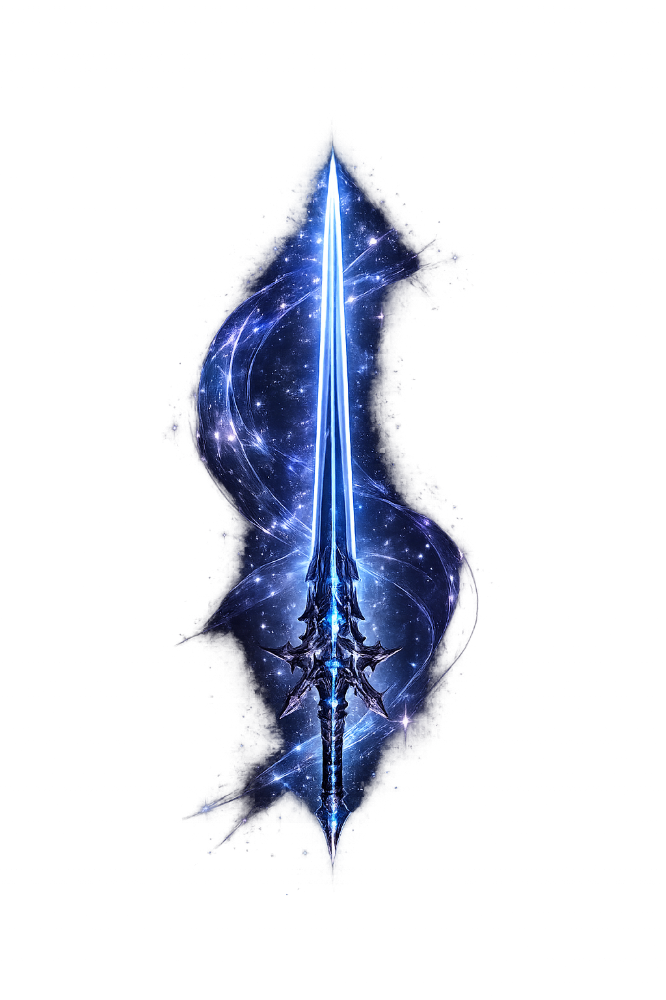

01
STORY
記憶が失われるたび、世界は再構築される。
かつて光に満ちていた王国は、いま静かな夜に沈んでいた。
少年は失われた記憶を辿り、世界の真実へと近づいていく。
Dark Fantasy RPG
世界は、記憶によって再構築される。
SCROLL
01
記憶が失われるたび、世界は再構築される。
かつて光に満ちていた王国は、いま静かな夜に沈んでいた。
少年は失われた記憶を辿り、世界の真実へと近づいていく。
02
SWORDSMAN
失われた記憶を追う若き剣士。青い光を宿す剣を手に、崩れゆく世界を旅する。
MAGE
紫の魔法を操る魔導師。記憶の欠片を読み解き、アルトを導く存在。
KEY PERSON
白い光に包まれた少女。世界が再構築される理由を知る、ただ一人の存在。
03
記憶の力を解放し、属性を連携させて戦うリアルタイムバトル。
スキルツリーを解放し、キャラクターの記憶と能力を成長させる。
魔法陣から放たれる奥義で、戦況を一変させるスキル演出。

PAGE TOP